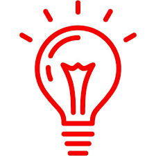

3.1. Data Preprocessing
In the context of NLP, data engineering is responsible for the entire lifecycle of text and speech data, from acquisition to the moment it’s ready for use by models. This is a crucial, often invisible, stage that ensures machine learning (ML) and large language models (LLM) receive high-quality data, which directly impacts their performance and accuracy. Data engineering could undoubtedly be the subject of an entire book. While this text won’t cover it in that much detail, it is impossible to move on to further NLP analysis without addressing a few key data engineering steps. The purpose of this chapter is to familiarize the reader with the fundamental methods and techniques of data engineering that are essential for more advanced work in the field of NLP.
3.1. Structure and Representation of Text
In natural language processing, the distinction between unstructured and semi-structured textual data is fundamental.
Unstructured text refers to free-form content such as novels, social media posts, or transcribed speech, where linguistic meaning is conveyed without explicit organizational markers beyond the linguistic units themselves.
Semi-structured text, by contrast, embeds linguistic material within a predefined schema or markup, as in tables, XML tags, or JSON objects, which provide contextual cues that can be exploited computationally.
A critical first step in analyzing either type of data is tokenization, which can be carried out at different levels - splitting into:
- characters (useful in languages without clear word boundaries, e.g., Chinese),
- words (the most common unit in information retrieval and sentiment analysis), or
- sentences (often applied in discourse analysis or machine translation).
The formatting and document structure of a text play an equally important role. For instance, recognizing paragraph boundaries can guide topic segmentation, while the alignment of rows and columns in tables supports relation extraction. Similarly, XML or JSON provide hierarchical, machine-readable metadata that enriches the raw linguistic signal with structural meaning. Thus, effective text processing requires both sensitivity to tokenization choices and an awareness of the broader representational framework in which the text is embedded (Manning & Schütze, 1999; Jurafsky & Martin, 2023).
| Aspect | Unstructured Text | Semi-structured Text |
|---|---|---|
| Definition | Content written in free form, without a formal schema or metadata. | Text that contains natural language but is embedded in a defined structure (e.g., tags, key–value pairs). |
| Examples | Social media posts, newspaper articles, novels, conversation transcripts. | XML documents (e.g., PubMed articles), JSON files with product reviews, system logs with metadata fields, tables (Excel, CSV). |
| Tokenization | Typically at the word and sentence levels; in languages without spaces – at the characterlevel. | Tokenization may also include fields (e.g., keys in JSON), table elements, or XML tags. |
| Role of structure | Structure emerges mainly from writing conventions (e.g., paragraph divisions). | Structure is imposed by the format (e.g., XML hierarchy, rows and columns in tables). |
| Advantages for NLP | Rich semantic and contextual content; suitable for qualitative analysis and training large language models. | Facilitates automatic information extraction; metadata supports classification and data integration. |
| Challenges | High ambiguity, lack of clear unit boundaries (e.g., sentences, words). | Requires interpreting both content and structure; prone to formatting errors (e.g., unclosed XML tags). |
| Typical NLP applications | Sentiment analysis, named entity recognition (NER), machine translation. | Semantic search in XML documents, information extraction from medical tables, data analytics from APIs (JSON). |
3.2. Data Parsing
Data parsing refers to the process of transforming raw data into a structured format that can be easily understood and processed by a computer. It typically involves breaking data into smaller components, recognizing and converting data types (e.g., turning a text string into a numerical value or a proper date object), and resolving formatting inconsistencies. For example, parsing a CSV file allows the system to read comma-separated values and represent them as a structured table, while in natural language processing, parsing can mean analyzing the syntactic structure of a sentence. In both cases, parsing is a crucial step that prepares data for subsequent analysis, modeling, or interpretation.
Parsing Dates
Original string: 21-08-2025
Parsed date object: 2025-08-21 00:00:00In my research practice, I most often encountered parsing of .json files, since most of the data came from internet sources. JSON (JavaScript Object Notation) has become a de facto standard for web-based data exchange because it is lightweight, human-readable, and easily parsed by most programming languages (Wang et al., 2021). In research practice, especially when working with APIs, social media data, or digital platforms, JSON files are the most common format, which explains why parsing them is such a frequent task in data science workflows.
Sample JSON with Text Content
{
"glossary": {
"title": "example glossary",
"GlossDiv": {
"title": "S",
"GlossList": {
"GlossEntry": {
"ID": "SGML",
"GlossTerm": "Standard Generalized Markup Language",
"Acronym": "SGML",
"Abbrev": "ISO 8879:1986",
"GlossDef": {
"para": "A meta-markup language, used to create markup languages such as DocBook.",
"GlossSeeAlso": ["GML", "XML"]
},
"GlossSee": "markup"
}
}
}
}
}Python Code: Extracting Only the Text Fields
import json
# Example JSON data (as Python dict)
json_data = {
"glossary": {
"title": "example glossary",
"GlossDiv": {
"title": "S",
"GlossList": {
"GlossEntry": {
"ID": "SGML",
"GlossTerm": "Standard Generalized Markup Language",
"Acronym": "SGML",
"Abbrev": "ISO 8879:1986",
"GlossDef": {
"para": "A meta-markup language, used to create markup languages such as DocBook.",
"GlossSeeAlso": ["GML", "XML"]
},
"GlossSee": "markup"
}
}
}
}
}
# Recursive function to collect all string values
def collect_texts(obj):
texts = []
if isinstance(obj, dict):
for v in obj.values():
texts.extend(collect_texts(v))
elif isinstance(obj, list):
for item in obj:
texts.extend(collect_texts(item))
elif isinstance(obj, str):
texts.append(obj)
return texts
text_values = collect_texts(json_data)
print("Extracted text values:")
for t in text_values:
print("-", t)Extracted text values:
- example glossary
- S
- SGML
- Standard Generalized Markup Language
- SGML
- ISO 8879:1986
- A meta-markup language, used to create markup languages such as DocBook.
- GML
- XML
- markup3.3. Initial Preprocessing
Let’s assume we have already acquired the text data [see table below for potential data sources]. Now let’s look at a few basic text processing tasks, emphasizing that, depending on the goal of the analysis, not all steps should be included in our work.
3.3.1. Lowercases
To proceed to the preliminary analysis stage, it is essential to convert the text to lowercase. Although letter case may occasionally carry meaning, in most NLP applications it is insignificant. Lowercasing ensures that words such as Apple and apple are treated as the same token, thereby reducing unnecessary duplication in the vocabulary. This process improves consistency, lowers the dimensionality of the text representation, and facilitates more efficient analysis. As a result, in our descriptive statistics words will not appear as separate entities.
In python transformacja do lowercase jest bardzo prosta:
apple is different from apple.
Remember that a text object can be much larger than a single sentence; for example, it can be an entire book uploaded from a .txt file.If you are working with a list of strings (e.g., a dataset), you can apply the same operation with a list comprehension:
['natural language processing', 'ai open tool', 'descriptive statistics']3.3.2. Stopwords
Stopwords are common words such as the, is, or and that occur very frequently in a language but usually carry little semantic meaning. Removing them helps reduce noise in the data, decreases the size of the vocabulary, and improves the efficiency of text processing. In many NLP tasks, eliminating stopwords allows algorithms to focus on the more informative terms that contribute to the actual meaning of the text.
IMPORTANT!!! Stopwords apply to all languages, not only English! It is advisable to find a file (most often a .txt) with a stopword list for the given language. Many stopword lists are also provided by the Python library spaCy.
import spacy
# Load English model
nlp = spacy.load("en_core_web_sm")
# Example text
text = "This is an example sentence, and it shows how stopwords can be removed."
# Process the text with spaCy
doc = nlp(text)
# Remove stopwords and punctuation
filtered_tokens = [token.text for token in doc if not token.is_stop and not token.is_punct]
print("Original text:")
print(text)
print("\nFiltered text (without stopwords):")
print(" ".join(filtered_tokens))Original text:
This is an example sentence, and it shows how stopwords can be removed.
Filtered text (without stopwords):
example sentence shows stopwords removedA more traditional approach using a .txt file for the Polish language.
# Loading a stopword list from a file
with open("stopwords_pl.txt", "r", encoding="utf-8") as f:
stopwords_pl = set([line.strip() for line in f if line.strip()])
# Exmaple text
text = "To jest przykładowe zdanie, które pokazuje jak usuwać polskie stopwords."
# Simple tokenization (splitting by spaces and punctuation)
import re
tokens = re.findall(r'\w+', text.lower()) # \w+ = słowa, lower() = małe litery
# Remowing stopwords
filtered_tokens = [word for word in tokens if word not in stopwords_pl]
print("Oryginalny tekst:")
print(text)
print("\nPo usunięciu stopwords:")
print(" ".join(filtered_tokens))Oryginalny tekst:
To jest przykładowe zdanie, które pokazuje jak usuwać polskie stopwords.
Po usunięciu stopwords:
przykładowe zdanie pokazuje usuwać polskie stopwords3.3.3. Remowing Strange Characters
An important preprocessing step in textual data analysis is the removal of strange or non-standard characters, such as control symbols, excessive punctuation, or characters introduced through encoding errors. These artifacts often appear when data is collected from heterogeneous sources, including web scraping, PDF extraction, or social media platforms. If not removed, they can distort tokenization, inflate vocabulary size, and reduce the overall quality of subsequent analysis. By applying normalization techniques—such as regular expressions, Unicode filtering, or specialized text-cleaning libraries—we can ensure that only meaningful characters remain in the dataset. This step enhances data consistency and contributes to more reliable outcomes in NLP tasks.
import re
# Example text with strange characters
text = "Hęllø!!! ☺✈✨ This text contains $trange ©haracters 123."
print("Original text:")
print(text)
# Remove all characters that are not letters, numbers, or basic punctuation
clean_text = re.sub(r"[^a-zA-Z0-9\s.,!?]", "", text)
print("\nCleaned text:")
print(clean_text)Original text:
Hęllø!!! ☺✈✨ This text contains $trange ©haracters 123.
Cleaned text:
Hll!!! This text contains trange haracters 123.However, in internet language, symbols such as emoticons often carry a significant informational load. Therefore, their removal is not always advisable. Moreover, some analyses may even focus exclusively on them. It is thus worth being cautious at this stage.